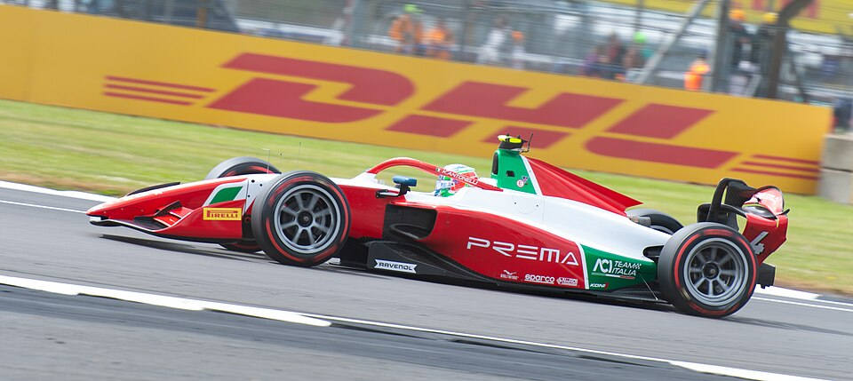

Parrilla y Escuderías
Conoce a algunos de los pilotos más destacados:
| Piloto | Dorsal | Escudería | Año |
|---|---|---|---|
| Kimi Antonelli | #12 | Mercedes-AMG PETRONAS | 2026 |
| Max Verstappen | #1 | Oracle Red Bull Racing | 2023 |
| Charles Leclerc | #16 | Scuderia Ferrari | 2024 |
Imagen Destacada

Fuente de la imagen: Wikimedia Commons (Licencia libre).
Glosario de Términos de los Pilotos
Conceptos habituales en la trayectoria de un piloto de F1:
- Pole Position
- Salir desde la primera posición en la parrilla tras la sesión de clasificación del sábado.
- Podio
- Los tres primeros puestos de la carrera que suben a celebrar la victoria al finalizar el Gran Premio.